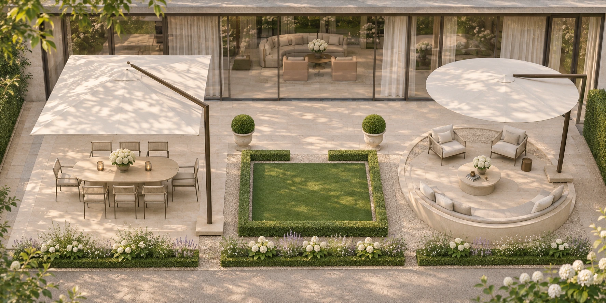
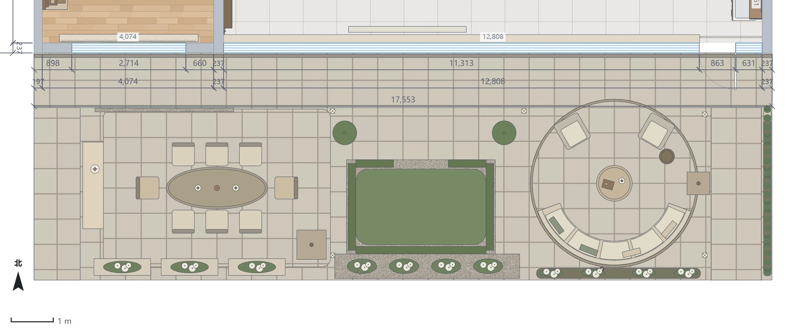
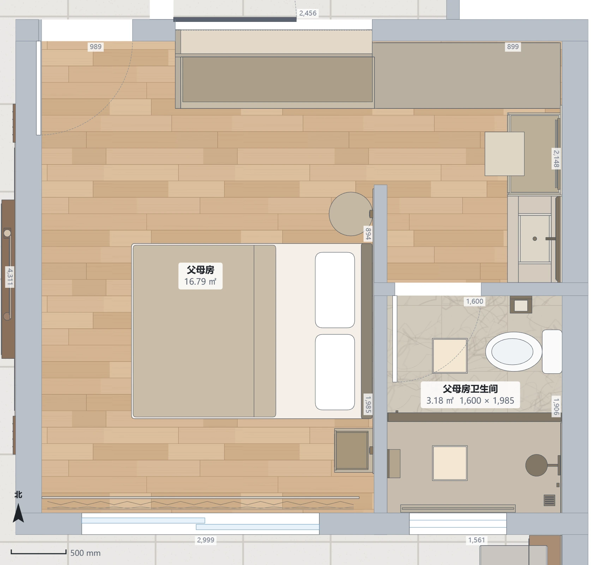
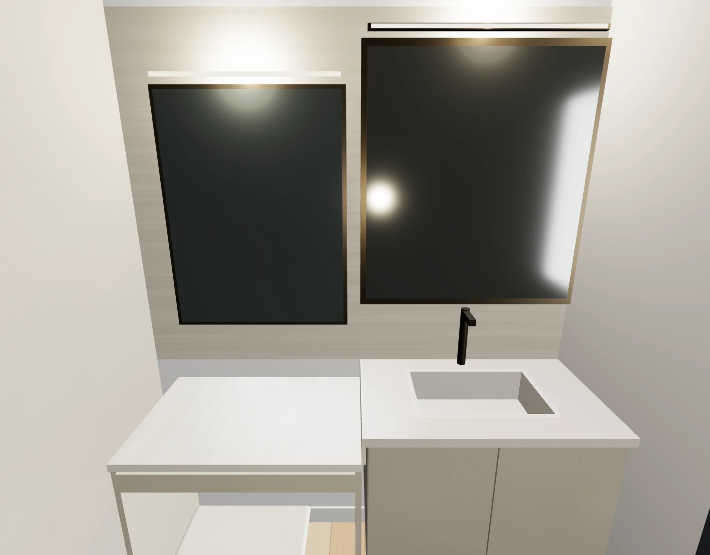
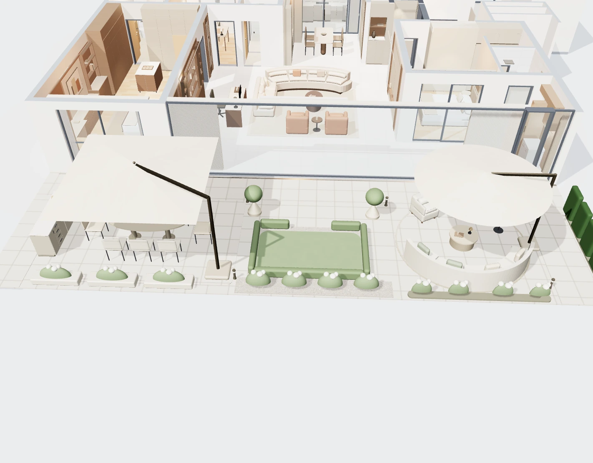

法式会客花园 · 氛围效果
浅暖石材、白绿花境与低修剪绿篱；保留双悬臂伞、八人聚餐和圆庭。此图由AI根据新版模型生成，种植与局部造型有近似。

花园平面 · 同一可编辑模型
北向在上，暂隐高处伞面以看清家具。窗前连续通道1300mm，西侧1100mm，东侧1200mm。

父母房平面 · 北侧补柜，东侧梳妆洗漱一体
梳妆桌从北侧移到东墙洗面盆北侧：750mm梳妆段＋800mm洗漱段；北侧原1770mm梳妆位补成到顶衣柜。床位与门窗保留。

父母房 · 一体柜氛围效果
梳妆台高750mm，洗漱台高840mm；前沿齐平，以同色柜面、连续浅石背景连接。台下留腿部空间，凳子能收进。AI氛围图，细部按模型与复尺深化。

洗漱＋梳妆 · 实际模型截图
两段高差90mm，交界做挡水收口；洗面盆向南调整约251mm，排水接管需安装深化。

全屋与花园 · 实际模型日景
场地为17.553×5.4m。植物为可编辑体量简模；效果图中的叶片花朵未作为高面数模型加入网页。

本轮核对
模型保存后重新打开数据一致，墙体、门窗与水电对象未改；八把餐椅后拉450mm与新增固定物无碰撞，花园三条通路无新增低位障碍。父母房新梳妆柜未侵入卫生间隔墙。
现场仍需复核：洗漱台给排水接驳、台面挡水与插座位置，花园覆土与荷载、排水防水、伞具抗风与配重、植物品种和根域。
法式花境参考：English Heritage · Parterre gardens。本方案只提取规整边界与砾石分隔。